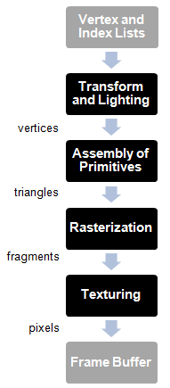
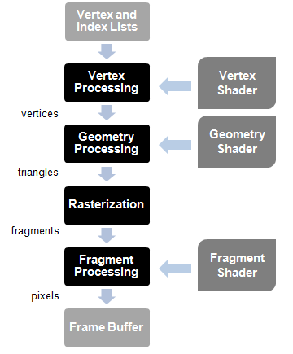
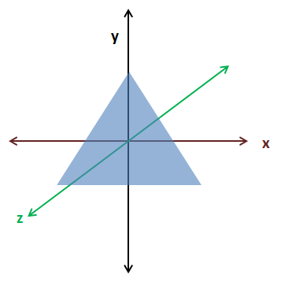

渲染（Rendering）
在本章中，我们将学习用OpenGL渲染场景时所要做的事情。如果你已经习惯了OpenGL的旧版本，习惯了使用固定管线，你可能会跳过这一章，不想知道为什么它需要这么复杂。它其实更简单，更灵活，你只需要给它一个表现的机会。现代OpenGL让你只需考虑一个问题，这可以让你以更合理的方式组织代码和开发。
将三维表示映射到二维屏幕的一系列步骤被称为图形管线（Graphics Pipeline）。OpenGL最初的版本使用了一个被称为固定管线（Fixed-function Pipeline）的模型。该模型在绘制过程中定义了一组固定的操作步骤。程序员被每一步可用的函数集约束，可以使用的效果和进行的操作受到API本身（例如，“设置雾”或“添加光照”）的限制，但是这些功能的实现是固定的，并且不能改变。
固定管线由以下步骤组成：

OpenGL 2.0 引入了可编程管线（Programmable Pipeline）的概念。在这个模型中，组成图形管线的不同步骤可以通过使用一组叫做着色器（Shader）的特定程序来控制或编程。下面的图片简单的描述了OpenGL可编程管线：

该渲染最初将以顶点缓冲区为形式的一系列顶点作为输入。但是，什么是顶点？顶点（Vertex）是描述二维或者三维空间中的点的数据结构。如何描述三维空间中的一个点呢？通过指定其X、Y和Z坐标。什么是顶点缓冲区？顶点缓冲区（Vertex Buffer）是使用顶点数组来包装所有需要渲染的顶点的另一种数据结构，并使这些数据能在图形管线的着色器中使用。
这些顶点由顶点着色器（Vertex Shader）处理，其主要目的是计算每个顶点到屏幕空间中的投影位置。该着色器还可以生成与颜色或纹理相关的其他输出，但其主要目的是将顶点投影到屏幕空间中，即生成点。
几何处理（Geometry Processing）阶段将由顶点着色器变化的顶点连接成三角形。它考虑到顶点储存的顺序，并使用不同的模型对它们进行分组。为什么是三角形？三角形（Triangle）就是显卡的基本工作单元。它是一个简单的几何形状，可以组合和变换，以构建复杂的三维场景。这个阶段还可以使用特定的着色器来对顶点进行分组。
光栅化（Rasterization）阶段接收此前生成的三角形，剪辑它们，并将它们转换成像素大小的片元。
这些片元将在片元处理（Fragment Processing）阶段被片元着色器（Fragment Shader）使用，以生成像素写入到帧缓冲区的最终颜色。帧缓冲区（Framebuffer）是图形管线的最终输出。它储存了每个像素应该被绘制到屏幕上的值。
注意，显卡被设计成并行处理上述所有操作。输入数据可以并行处理以生成最终场景。
让我们开始编写第一个着色器程序。着色器是使用基于ANSI C的GLSL（OpenGL着色器语言）编写的。首先，在resources目录下创建一个名为“vertex.vs”（扩展名为顶点着色器英文简写）的文件，内容如下：
#version 330
layout (location=0) in vec3 position;
void main()
{
gl_Position = vec4(position, 1.0);
}
第一行是一个表示我们正在使用的GLSL语言版本的标识符。下表是GLSL版本、与该版本匹配的OpenGL版本和使用方法（来自维基百科： https://en.wikipedia.org/wiki/OpenGL_Shading_Language#Versions）。
| GLSL版本 | OpenGL版本 | 着色器标识符 |
|---|---|---|
| 1.10.59 | 2.0 | #version 110 |
| 1.20.8 | 2.1 | #version 120 |
| 1.30.10 | 3.0 | #version 130 |
| 1.40.08 | 3.1 | #version 140 |
| 1.50.11 | 3.2 | #version 150 |
| 3.30.6 | 3.3 | #version 330 |
| 4.00.9 | 4.0 | #version 400 |
| 4.10.6 | 4.1 | #version 410 |
| 4.20.11 | 4.2 | #version 420 |
| 4.30.8 | 4.3 | #version 430 |
| 4.40 | 4.4 | #version 440 |
| 4.50 | 4.5 | #version 450 |
第二行指定此着色器的输入格式。OpenGL缓冲区中的数据可以是我们想要的任何东西，也就是说，语言不会强迫你传递预定义语义的任何特定数据结构。从着色器的角度来看，它希望接收带有数据的缓冲区。它可以是一个坐标，一个有一些附加信息的坐标，或者我们想要的任何东西。顶点着色器只接收浮点数组。当填充缓冲区时，我们定义要由着色器处理的缓冲块。
首先，需要把这些块变成对我们有意义的东西。现在规定从位置0开始，我们期望接收由三个属性（X、Y、Z）组成的向量。
着色器有个主代码块，就像任何C语言程序一样，这是示例是非常简单的。它只是将接收到的坐标不经任何变换返回到gl_Position。你现在可能想知道为什么三个属性的向量被转换成四个属性的向量（vec4）。这是因为gl_Position仅接受vec4类型的数据，因为它是齐次坐标（Homogeneous Coordinates）。也就是说，它希望接收到形似(X, Y, Z, W)的东西，其中W代表一个额外的维度。为什么还要添加另一个维度？在之后的章节中，你会看到我们需要做的大部分操作都是基于向量和矩阵的。如果没有额外的维度，一些操作不能组合。例如，不能把旋转和变换操作组合起来。（如果你想学习更多有关于这方面的知识，这个额外的维度允许我们组合仿射和线性变换。你可以通过阅读《3D Math Primer for Graphics and Game development》（作者是Fletcher Dunn 和 Ian Parberry）来更多地了解这一点。）
现在来看看我们的第一个片元着色器。在resources目录下创建一个名为fragment.fs（扩展名片元着色器英文简写）的文件，内容如下：
#version 330
out vec4 fragColor;
void main()
{
fragColor = vec4(0.0, 0.5, 0.5, 1.0);
}
该结构与我们的顶点着色器非常相似。现在，它将为每个片元设置固定的颜色。输出被定义为第二行的vec4类型的fragColor变量。
现在我们已经创建了着色器，该如何使用它们呢？以下是我们要做的一系列步骤： 1. 创建OpenGL程序 2. 载入顶点和片元着色器文件 3. 对每个着色器创建一个新的着色器程序并指定它的类型（顶点或片元） 4. 编译着色器 5. 将着色器绑定到OpenGL程序上 6. 连接程序
最后，着色器将会被载入到显卡中，我们可以通过引用程序ID来使用它。
package org.lwjglb.engine.graph;
import static org.lwjgl.opengl.GL20.*;
public class ShaderProgram {
private final int programId;
private int vertexShaderId;
private int fragmentShaderId;
public ShaderProgram() throws Exception {
programId = glCreateProgram();
if (programId == 0) {
throw new Exception("Could not create Shader");
}
}
public void createVertexShader(String shaderCode) throws Exception {
vertexShaderId = createShader(shaderCode, GL_VERTEX_SHADER);
}
public void createFragmentShader(String shaderCode) throws Exception {
fragmentShaderId = createShader(shaderCode, GL_FRAGMENT_SHADER);
}
protected int createShader(String shaderCode, int shaderType) throws Exception {
int shaderId = glCreateShader(shaderType);
if (shaderId == 0) {
throw new Exception("Error creating shader. Type: " + shaderType);
}
glShaderSource(shaderId, shaderCode);
glCompileShader(shaderId);
if (glGetShaderi(shaderId, GL_COMPILE_STATUS) == 0) {
throw new Exception("Error compiling Shader code: " + glGetShaderInfoLog(shaderId, 1024));
}
glAttachShader(programId, shaderId);
return shaderId;
}
public void link() throws Exception {
glLinkProgram(programId);
if (glGetProgrami(programId, GL_LINK_STATUS) == 0) {
throw new Exception("Error linking Shader code: " + glGetProgramInfoLog(programId, 1024));
}
if (vertexShaderId != 0) {
glDetachShader(programId, vertexShaderId);
}
if (fragmentShaderId != 0) {
glDetachShader(programId, fragmentShaderId);
}
glValidateProgram(programId);
if (glGetProgrami(programId, GL_VALIDATE_STATUS) == 0) {
System.err.println("Warning validating Shader code: " + glGetProgramInfoLog(programId, 1024));
}
}
public void bind() {
glUseProgram(programId);
}
public void unbind() {
glUseProgram(0);
}
public void cleanup() {
unbind();
if (programId != 0) {
glDeleteProgram(programId);
}
}
}
ShaderProgram类的构造函数在OpenGL中创建一个新的程序，并提供添加顶点和片元着色器的方法。这些着色器被编译并绑定到OpenGL程序中。当所有的着色器都被绑定时，应该调用link方法，来连接所有代码并验证所有操作都已正确地完成。
一旦着色器程序被连接，编译的顶点和片元着色器可以被释放（通过调用glDetachShader方法）
关于验证，是通过调用glValidateProgram方法完成的。此方法主要用于调试，当游戏到达生产阶段时，应将其删除。此方法将验证在当前OpenGL状态下着色器是否正确。这意味着，即使着色器是正确的，在某些情况下也可能验证失败，这是因为当前状态不够完整（一些数据可能尚未加载），无法运行着色器。因此，我们可以将错误信息输出到标准错误输出中。
ShaderProgram类还提供了在渲染时激活该程序（绑定）和停止使用它（解绑）的方法。最后，它提供了一个cleanup方法，用于当它不再被需要时，释放所有资源。
既然有一个清理方法，让我们更改IGameLogic接口来添加一个cleanup方法：
void cleanup();
这个方法将在游戏循环结束时调用，所以需要修改GameEngine类的run方法：
@Override
public void run() {
try {
init();
gameLoop();
} catch (Exception excp) {
excp.printStackTrace();
} finally {
cleanup();
}
}
现在我们可以使用着色器来显示一个三角形。这将在Renderer类的init方法中进行。首先，我们要创建着色器程序：
public void init() throws Exception {
shaderProgram = new ShaderProgram();
shaderProgram.createVertexShader(Utils.loadResource("/vertex.vs"));
shaderProgram.createFragmentShader(Utils.loadResource("/fragment.fs"));
shaderProgram.link();
}
我们已经创建了一个工具类，它提供了一个从类路径中取得文件内容的方法。此方法用于取得着色器的内容。
现在我们可以把我们的三角形定义为一组浮点数。我们创建一个一维浮点数组，它将定义三角形的顶点。正如你所看到的，数组中没有结构。就目前而言，OpenGL无法知道该数组的结构，这只是一组浮点数：
float[] vertices = new float[]{
0.0f, 0.5f, 0.0f,
-0.5f, -0.5f, 0.0f,
0.5f, -0.5f, 0.0f
};
下图体现了在坐标系中的三角形。

现在有了坐标，我们需要把它们储存到我们的显卡中，并告诉OpenGL它的结构。现在将介绍两个重要的概念，顶点数组对象（Vertex Array Object， VAO）和顶点缓冲对象（Vertex Buffer Object, VBO）。如果你对下一段代码感到疑惑，请记住现在所做的是把将要绘制的模型对象数据传递到显卡的储存器中。当储存它的时候，我们将得到一个ID，稍后再绘制时会使用它。
先介绍顶点缓冲对象（VBO）吧。VBO只是显卡储存器中存储顶点的内存缓冲区。这是用来暂存一组三角形模型的浮点数的地方。正如之前所说的，OpenGL对我们的数据结构一无所知。事实上，它不仅可以保存坐标，还可以保存其他信息，比如纹理、颜色等。
顶点数组对象（VAO）是包含一个或多个VBO的对象，通常被称为属性列表。每个属性列表可以保存一种类型的数据：位置、颜色、纹理等。在每个渲染间隔中，你可以自由地储存所需的任何数据。
一个VAO就像是一个包装，它按一组定义对储存在显卡中的数据分组。当我们创建一个VAO是，我们得到一个ID。我们使用这个ID来渲染它和使用它在创建过程中按特定定义的数据。
让我们继续编写示例代码。必须做的第一件事就是把浮点数储存在一个FloatBuffer中。这主要是因为我们必须使用基于C语言的OpenGL库的接口，所以必须把浮点数转换成可以由库管理的东西。
FloatBuffer verticesBuffer = MemoryUtil.memAllocFloat(vertices.length);
verticesBuffer.put(vertices).flip();
我们使用MemoryUtil类来在堆内存中创建一个缓冲区，以便于OpenGL库访问。在储存了数据（调用put方法）之后，我们需要调用flip方法将缓冲区的位置重置为0（也就是说，我们已经完成了对它的写入）。记住，Java中的对象，被分配在一个叫堆（Heap)的内存空间。堆是JVM内存中保留的一大堆内存。储存在堆中的对象不能通过本地代码访问（JNI，这种机制使得Java不能直接调用本地代码）。Java代码和本地代码直接共享内存数据的唯一方法是直接在Java分配内存。
如果你来自LWJGL的旧版本，强调一些要点是很重要的。你可能注意到了，我们不使用工具类BufferUtils来创建缓冲区。相反，我们使用MemoryUtil类。这是由于BufferUtils不是非常有效的，并且仅被用于向后兼容。相反，LWJGL 3提供了两种缓冲区的管理方法：
- 自动管理缓冲区，即由垃圾回收器自动回收的缓冲区。这些缓冲区主要用于短暂的操作，或者用于传递到GPU的数据，并且不需要存在于进程内存中。这是通过使用
org.lwjgl.system.MemoryStack实现的。 - 手动管理缓冲区。这种情况下，一旦完成操作，我们需要小心地释放它们。这些缓冲区用于长时间操作或者大量的数据。这是通过使用
MemoryUtil类实现的。
你可以在此处查阅细节： https://blog.lwjgl.org/memory-management-in-lwjgl-3/
在这种情况下，我们的数据被发送到GPU，这样就可以使用自动管理的缓冲区。但是，稍后我们将使用它们来储存可能需要手动管理的大量数据。这就是为什么我们使用MemoryUtil类，因此，这就是为什么我们要在最后一个块中释放缓冲区资源。在下一章中，我们将学习如何使用自动管理缓冲区。
现在需要创建VAO然后绑定它。
vaoId = glGenVertexArrays();
glBindVertexArray(vaoId);
然后需要创建VBO，绑定它并将数据输入。
vboId = glGenBuffers();
glBindBuffer(GL_ARRAY_BUFFER, vboId);
glBufferData(GL_ARRAY_BUFFER, verticesBuffer, GL_STATIC_DRAW);
memFree(verticesBuffer);
现在是最重要的部分。我们需要定义数据的结构，并将其储存在VAO的属性列表中。这是用下面一行代码完成的。
glVertexAttribPointer(0, 3, GL_FLOAT, false, 0, 0);
它的参数是：
- index: 指定着色器期望此数据的位置。
- size: 指定每个顶点属性的数据数（从1到4）。现在，我们使用三维坐标，所以它应该是3。
- type: 指定数组中每个数据的类型，现在是浮点数。
- normalized: 指定值是否应规范化。
- stride: 指定连续顶点数据之间的字节偏移量（稍后我们再解释）。
- offset: 指定缓冲区中第一个数据的偏移量。
在完成了VBO操作之后，我们可以解除它和VAO的绑定（绑定到0）。
// 解绑VBO
glBindBuffer(GL_ARRAY_BUFFER, 0);
// 解绑VAO
glBindVertexArray(0);
一旦完成操作，我们必须释放由FloatBuffer占用的堆内存，这是通过手动调用memFree方法完成的，因为Java垃圾回收不会清理分配的堆内存。
if (verticesBuffer != null) {
MemoryUtil.memFree(verticesBuffer);
}
这就是init方法应该有的代码。我们的数据已经在显卡中，准备使用了。现在只需要修改我们的render方法在游戏循环中进行渲染。
public void render(Window window) {
clear();
if ( window.isResized() ) {
glViewport(0, 0, window.getWidth(), window.getHeight());
window.setResized(false);
}
shaderProgram.bind();
// 绑定VAO
glBindVertexArray(vaoId);
glEnableVertexAttribArray(0);
// 绘制顶点
glDrawArrays(GL_TRIANGLES, 0, 3);
// 还原状态
glDisableVertexAttribArray(0);
glBindVertexArray(0);
shaderProgram.unbind();
}
正如你所看到的，我们只需要清理窗口，绑定着色器程序，绑定VAO，绘制储存在VAO关联的VBO中的顶点，然后还原状态。仅此而已。
我们还在Renderer类中添加了一个cleanup方法用于释放资源。
public void cleanup() {
if (shaderProgram != null) {
shaderProgram.cleanup();
}
glDisableVertexAttribArray(0);
// 删除VBO
glBindBuffer(GL_ARRAY_BUFFER, 0);
glDeleteBuffers(vboId);
// 删除VAO
glBindVertexArray(0);
glDeleteVertexArrays(vaoId);
}
就这样！如果你小心地按着上述步骤做，你会看到类似的东西。
这是我们的第一个三角形！你也许会想这并不会使它成为前十名的游戏，这是正确的。你也可以认为这是一件无聊的工作来画一个无聊的三角形。但请记住，我们正在介绍关键的概念，并准备基于架构来做更复杂的事情。请耐心等待，继续阅读。